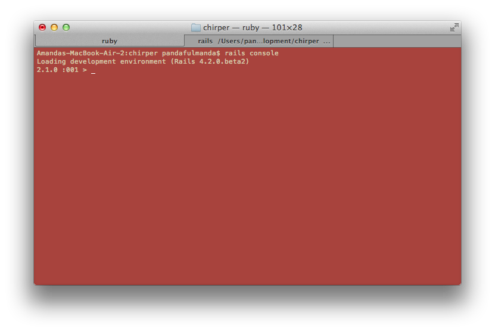
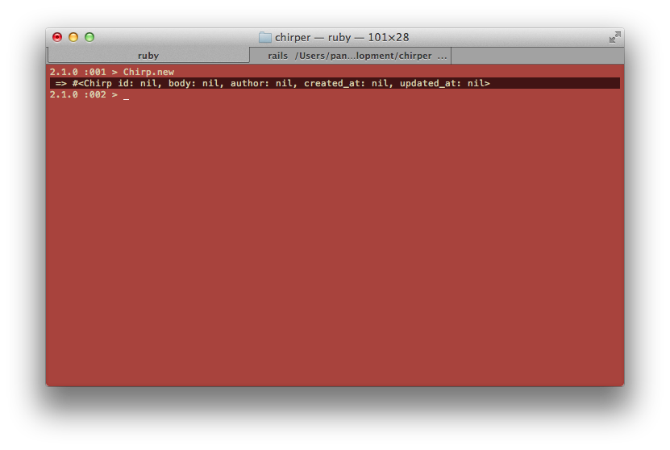
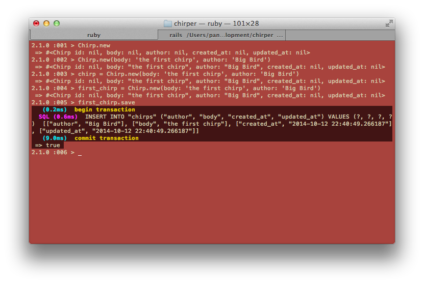
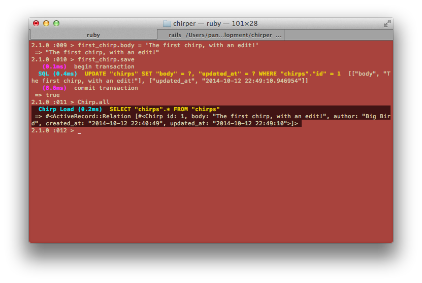

What should we be able to do with a Chirp?
Let's discuss! For example, we need to be able to make new ones.
Let's try doing some of these things!
As we discussed, we should be able to create a new Chirp, show a Chirp, update a Chirp, delete a Chirp, and list all our Chirps. Rails has a way for us to do these things in the commandline. It's called the Rails console. Let's go to the commandline and try:
$ rails console
Ask your coach what the Rails console is.
We should see:

The > means the Rails console is waiting for us to tell it something to do.
Let's try a couple things:
> Chirp.new
Take note of the highlighted line:

Here, we can see the body and author properties we told Rails about earlier, along with an id, a created_at, and a updated_at. These will come in very handy later on.
Next, let's making a new Chirp that has a body and an author.
> first_chirp = Chirp.new(body: 'the first chirp', author: 'Big Bird')
> first_chirp.save
This will make a new chirp and also save it to the database. The Rails console nicely tells us that a transaction with the database has happened.

Let's try the following:
> first_chirp.body
> first_chirp.created_at
> first_chirp.id
Each of these let us look at what's at each attribute.
With the id, we can look at the chirp with:
> Chirp.find(1)
We can update the body with:
> Chirp.find(1).update(body: 'The first chirp, with an edit!')
Let's look at all the chirps we have in our table:
> Chirp.all
The commandline shows us the updated chirp!

Let's make some more chirps using a shortcut function that will make a new chirp and save it at once:
> Chirp.create(body: 'Worm', author: 'The Early Bird')
> Chirp.create(body: 'Hello!', author: 'Big Bird')
> Chirp.create(body: 'I am yellow', author: 'Big Bird')
> Chirp.create(body: 'And it was all yellow', author: 'Coldplay')
> Chirp.create(body: 'bird, bird, bird', author: 'Word')
Looking at all chirps using Chirp.all again, we can see that there are many more chirps!
Some other things to try:
> Chirp.find(2)
> Chirp.find(1).destroy
> Chirp.all
> Chirp.where()
> Chirp.where(author: 'Big Bird')
> Chirp.find_by(author: 'Big Bird')
| Code | Effect (Describe what each did below or with your coach) |
|---|---|
Chirp.all |
|
Chirp.new |
|
Chirp.new(parameters) |
|
Chirp.find(id) |
|
Chirp.find(id).update(parameters) |
|
Chirp.create(parameters) |
|
Chirp.find(id).destroy |
|
Chirp.where(parameters) |
|
Chirp.find_by(parameters) |
. |
Talk through these different things with your coach. Ask your coach, what else could we try?
Take special note of the differences between
find,where, andfind_by.